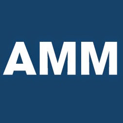

Partners Announcement
The Franklin Partnership today announced that Dennis M. Hertel, a six-term former Democratic member of Congress from Michigan will join the firm as Of Counsel, effective immediately
YOUR KEY TO WASHINGTON
Based in Washington, D.C., The Franklin Partnership provides law and government relations services to a broad range of clients. We represent a diverse cross-section of interest in the D.C. area and provide world-class service with results our clients depend on.
The Franklin Partnership provides comprehensive government relations and public policy analysis on behalf of our clients before Congress, the Administration, and state and local governments.
Within The Franklin Partnerships broad spectrum of law and government relations, our partners have focused expertise in appropriations, health care, municipalities, tax, international trade, manufacturing, defense, small business issues, tribal governments, energy, telecommunications, and more.
With a diverse client base, our partners are able to effectively focus on appropriations, health care, municipalities, tax, international trade, manufacturing, defense, small business issues, tribal governments, energy, and telecommunications, as well as other areas.
John Guzik is a founding partner of the Franklin Partnership with over 20 years of Capitol Hill and campaign experience. Previously, John served as Chief of Staff for Ways and Means Chairman Dave Camp.
Full bioA founding partner of The Franklin Partnership, Mr. Nashashibi works with members of Congress on behalf of his client on a variety of issues from trade to federal funding opportunities to telecommunications.
Full bio
A founding partner at The Franklin Partnership, Mr. Rose worked on Capitol Hill for nearly ten years, most recently serving as the Legislative Director for retired Rep. Pete Geren (D-TX), formerly Secretary of the Army.
Full bio
The Franklin Partnership today announced that Dennis M. Hertel, a six-term former Democratic member of Congress from Michigan will join the firm as Of Counsel, effective immediately

The Precision Metalforming Association (PMA) has joined forces with the National Tooling and Machining Association (NTMA) to strengthen industry advocacy efforts for small and medium-sized manufacturers.